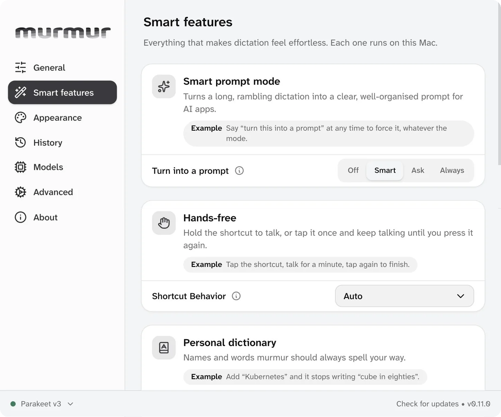
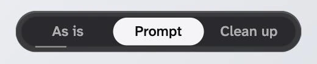
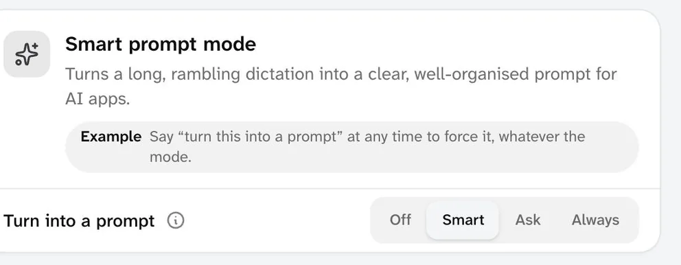
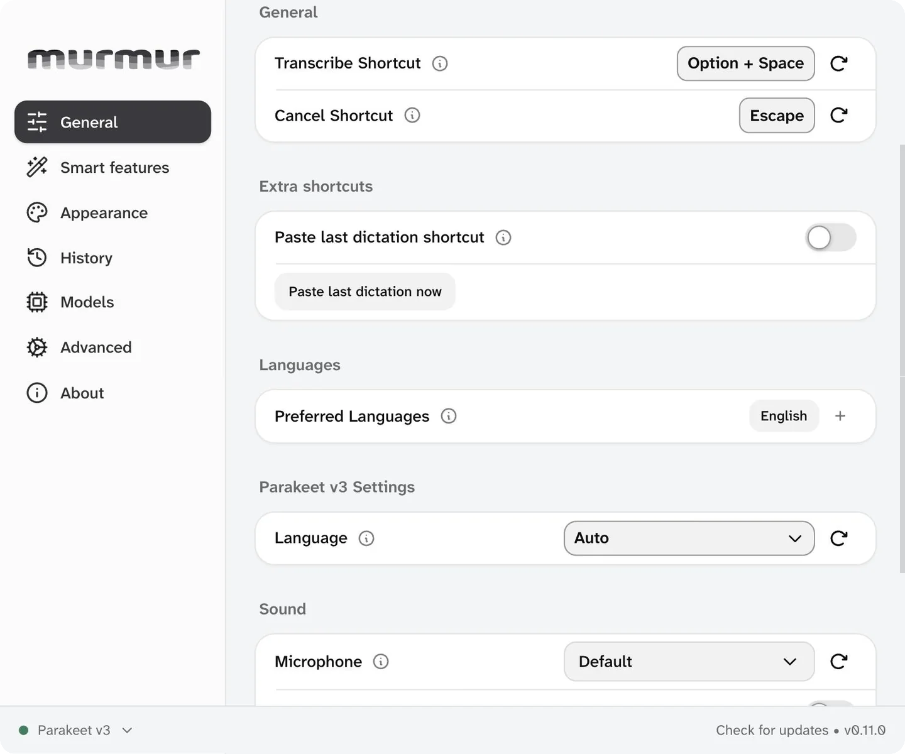
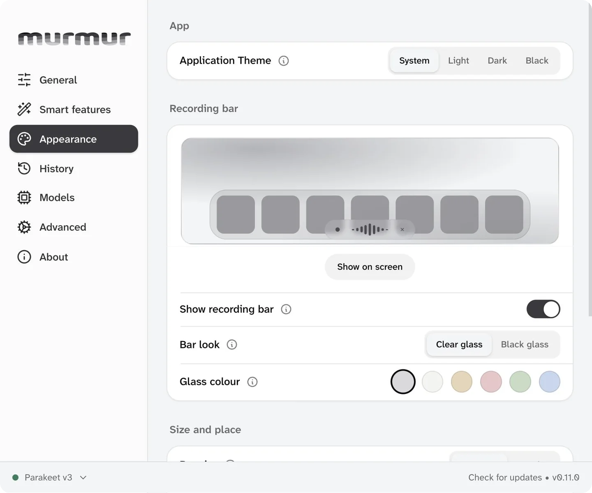

murmur
Talk instead of type, offline
Hold Option Space, speak, let go. murmur types what you said in any app, and your voice never leaves your Mac.
Version 0.11.0. The download button always gives the newest build.
Mac: a Mac with Apple silicon (M1 or newer). Free and open source (MIT licence). Based on Handy by cjpais.

What it does
Say it, and it is written
Hold Option and Space, talk
A small bar shows murmur is listening. Let go and the text lands where your cursor is.
Written on your Mac
The speech model runs offline. Nothing you say is sent anywhere.

Turn it into a prompt
After a long dictation, pick As is, Prompt or Clean up.

Smart prompt mode
Off, Smart, Ask or Always. Say “turn this into a prompt” to force it.
A closer look
The settings window


Install
Install murmur
Download it, open it, drag it into Applications. murmur is signed and checked by Apple, so it opens like any normal app.
Mac
A Mac with Apple silicon (M1 or newer)
Download for Mac murmur.dmgOr paste this into Terminal. It downloads, installs and opens murmur in one go.
curl -fsSL https://solomon-69.github.io/Mac-Apps/download/install.sh | bash -s murmur- Open the downloaded file and drag murmur into Applications.
- Open murmur. Allow the microphone, and allow Accessibility so it can paste for you. Pick a speech model and let it download.
- Click into any text box, hold Option and Space, speak, and let go.
Questions
Good to know
Does murmur send what I say anywhere?
No. Your voice is turned into text on your Mac. The only download is the speech model you pick during setup. Automatic update checks are off.
Does it need the internet?
Only once, to download the speech model. After that, dictation works offline.
Can I change the shortcut?
Yes. Option and Space is the starting shortcut. You can change it on the General page in Settings, and choose between holding it or tapping it once.
Which languages does it understand?
The speech models cover about 100 languages. During setup murmur suggests the model that suits your languages best.
Where does murmur come from?
murmur is based on Handy by cjpais, a free and open source dictation app under the MIT licence. murmur adds its own look, the smart prompt capsule and the quiet microphone boost.
Can I build it myself?
Yes. murmur is open source under the MIT licence. The code and build steps are on GitHub.
Opening the app
murmur is signed and checked by Apple (notarized), so it opens like any normal app: open the download, drag to Applications, double-click. You can check a download against the SHA-256 fingerprints in each release (the SHA256SUMS file) on GitHub.